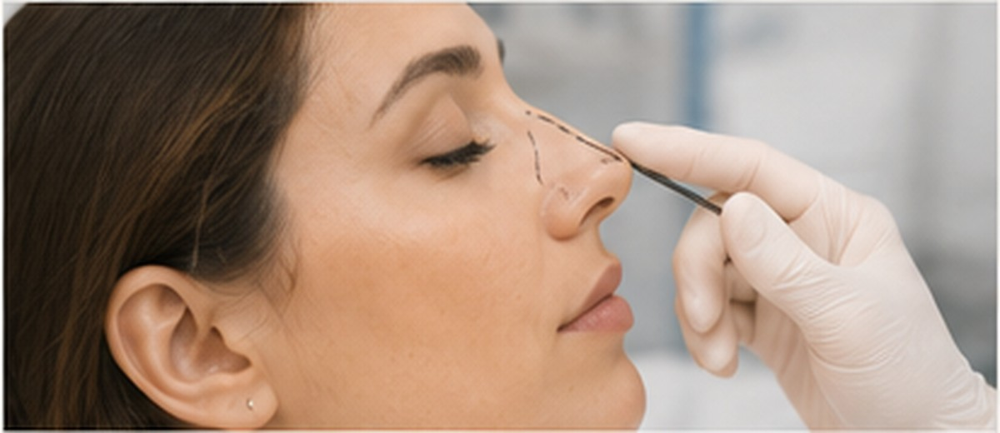
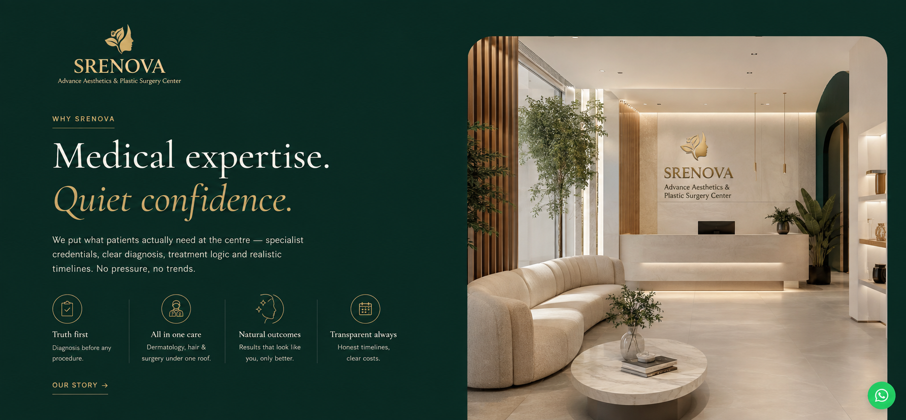

Facial balance
Front, side, base view and facial proportions are assessed together.
Rhinoplasty is planned around facial proportions, nasal structure, skin thickness, breathing function and the client’s desired change.
SRENOVA approaches nose surgery with conservative planning so the result supports the face rather than looking separate from it.

Front, side, base view and facial proportions are assessed together.
Breathing symptoms, deviation or previous trauma are discussed when present.

Step 03Swelling, splinting, downtime and final refinement timeline are explained.
Clients may want a bridge change, tip refinement, nostril adjustment, correction after injury or improvement in facial harmony.
The consultation should separate what is surgically possible, what suits the face and what recovery realistically looks like.
Specific language helps clients explain their concern clearly.
Hump or height concerns may be discussed.
Tip refinement depends heavily on cartilage and skin.
Alar or base concerns require careful proportion planning.
Functional issues may require septal or airway planning.
During consultation, standardised facial photographs can be analysed with AI-based facial landmark recognition. The software identifies key points on the nose and face and measures how they relate to each other.
These measurements give you and the surgeon a shared, objective starting point. They support the conversation; the surgical plan is always decided by the surgeon after examination.
Front, side and base views taken in consistent lighting.
AI locates points such as the nasion, tip, alar base and eye corners.
Nasal width, length, angles and symmetry are compared with facial thirds.
Findings are explained in plain language and checked against examination.
These points give visitors quick clarity before they message the clinic.
Requires detailed consultation.
Not a one-style-fits-all nose.
Swelling refines gradually.
Multiple angles should be assessed.
Clear answers help clients compare options with more confidence.
The safest and most natural plan depends on your anatomy, skin thickness, facial proportions and breathing function.
Breathing should be discussed before surgery. Functional concerns may change the plan.
Visible swelling improves gradually, but final refinement, especially at the tip, can take many months.
No. AI landmark recognition measures proportions to support the discussion. The surgeon examines your nose, skin and breathing and makes every planning decision with you.
Rhinoplasty fees depend on operating time, technique, cartilage grafts, anaesthesia and stay, so a fixed online price is often misleading. Send your estimator answers on WhatsApp for a personalised quote.
No. Filler results are temporary and it cannot reduce nose size or correct breathing. Surgical rhinoplasty is the option for lasting structural change.
Sometimes, but revision cases are more complex and need careful examination of structure, scar tissue and expectations.
Book a SRENOVA consultation for a careful assessment, realistic options and a treatment plan suited to your concern.